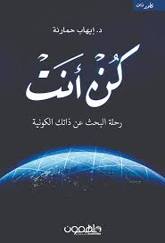

اسم الكتاب : كن انت
المؤلف: ايهاب حمارتة
وصف الكتاب:
"كن أنت" هو كتاب للكاتب إيهاب حرّاتة، يركز على مفهوم التطوير الذاتي وتحفيز القارئ ليكون النسخة الأفضل من نفسه. يتناول الكتاب مجموعة من الأفكار والنصائح التي تهدف إلى تعزيز الثقة بالنفس، وتحديد الأهداف،
محتوى الكتاب:
- تحقيق الذات: يساعد الكتاب القارئ على استكشاف قدراته وإمكاناته الحقيقية.
- تحديد الأهداف: يقدم استراتيجيات فعالة لوضع أهداف واقعية وقابلة للتحقيق.
- التغلب على التحديات: يوفر نصائح عملية للتعامل مع صعوبات الحياة والمضي قدمًا.
- التحفيز والإلهام: يتضمن قصصًا ملهمة وتجارب شخصية تشجع على اتخاذ خطوات إيجابية.
يتميز الكتاب بأسلوبه البسيط والمباشر، مما يجعله ملائمًا للجميع، سواء كانوا في بداية رحلة التطوير الذاتي أو يبحثون عن طرق لتعزيز نجاحاتهم.